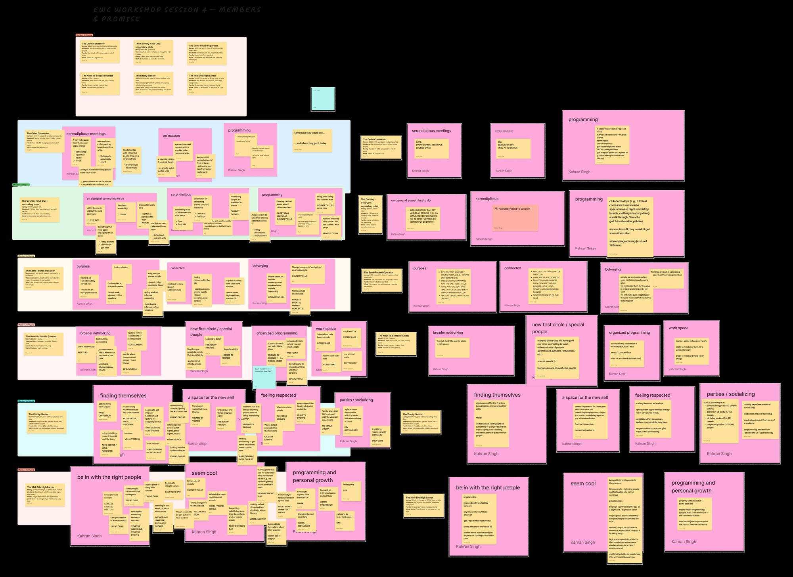
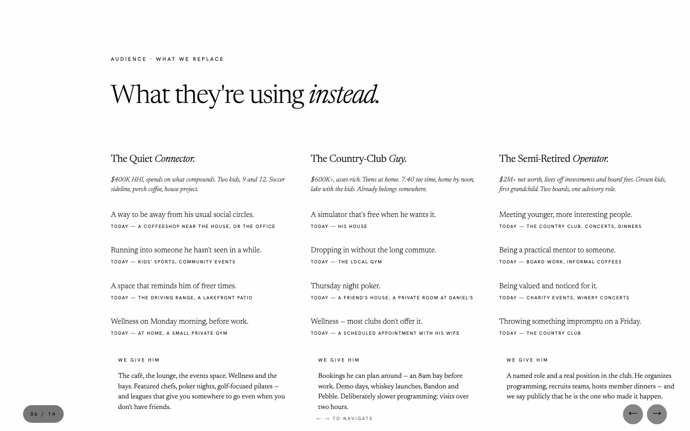
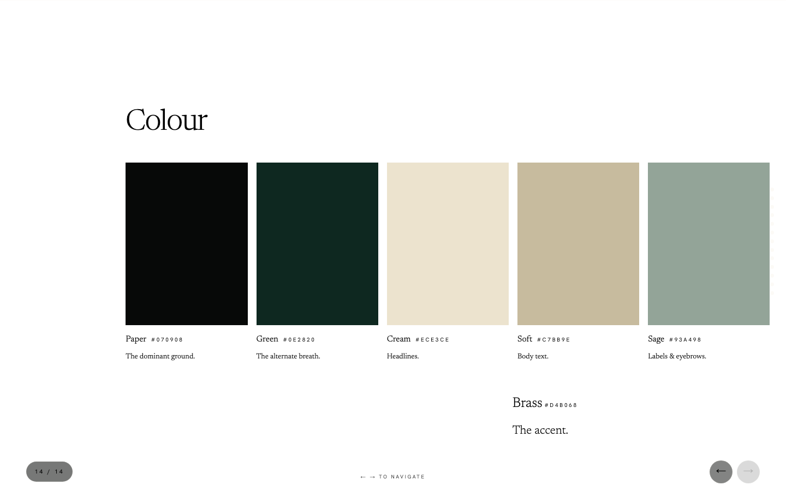
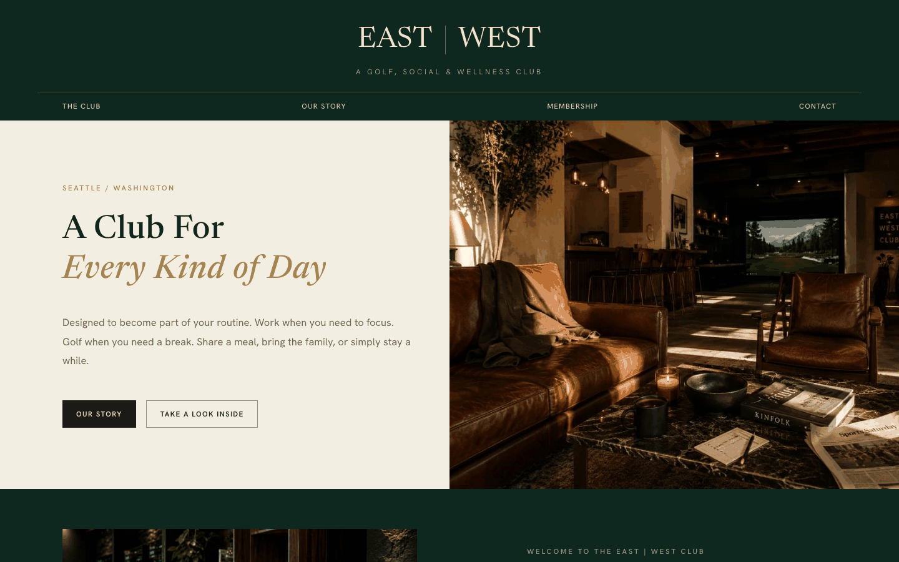

The ask was a brand. The work turned into a question first: who is this club for, and what are they doing on a Tuesday night without it?
| Who | What they want | Today they use | What the club gives |
|---|---|---|---|
The Quiet Connector$400K HHI, spends on what compounds. Two kids, 9 and 12. Soccer sideline, porch coffee, house project. | A way to be away from his usual social circles. | a coffeeshop near the house, or the office | We give himThe café, the lounge, the events space. Wellness and the bays. Featured chefs, poker nights, golf-focused pilates — and leagues that give you somewhere to go even when you don't have friends. |
| Running into someone he hasn't seen in a while. | kids' sports, community events | ||
| A space that reminds him of freer times. | the driving range, a lakefront patio | ||
| Wellness on Monday morning, before work. | at home, a small private gym | ||
The Country-Club Guy$600K+, asset-rich. Teens at home. 7:40 tee time, home by noon, lake with the kids. Already belongs somewhere. | A simulator that's free when he wants it. | his house | We give himBookings he can plan around — an 8am bay before work. Demo days, whiskey launches, Bandon and Pebble. Deliberately slower programming: visits over two hours. |
| Dropping in without the long commute. | the local gym | ||
| Thursday night poker. | a friend's house, a private room at Daniel's | ||
| Wellness — most clubs don't offer it. | a scheduled appointment with his wife | ||
The Semi-Retired Operator$2M+ net worth, lives off investments and board fees. Grown kids, first grandchild. Two boards, one advisory role. | Meeting younger, more interesting people. | the country club, concerts, dinners | We give himA named role and a real position in the club. He organizes programming, recruits teams, hosts member dinners — and we say publicly that he is the one who made it happen. |
| Being a practical mentor to someone. | board work, informal coffees | ||
| Being valued and noticed for it. | charity events, winery concerts | ||
| Throwing something impromptu on a Friday. | the country club | ||
The New-to-Seattle Founder$250K plus equity. Newly married, no kids, a dog. New restaurant, one hike, Sunday work. | A true second space. | a coffeeshop | We give himThe lounge as workspace and as the default "meet me at." A room mixed on purpose — professions, genders, backgrounds. Events with the top Seattle companies, one-offs, short-format matches. |
| Somewhere to take video calls. | a coffeeshop | ||
| Somewhere to meet investors. | a coffeeshop | ||
| People who aren't colleagues. | meetups, affinity groups, friends of friends | ||
The Empty-Nester$500K HHI, house paid off, college fund done. Kids in their 20s. Long breakfast, garden, dinner with two other couples. | Reconnecting with the hobbies they dropped. | the arts centre, the mall, a purchase | We give themCohorts that start the game on the same day, so nobody is behind. Leadership called out by name, and accolades worth winning. Private space to book — book clubs, birthdays, corporate parties. |
| Friends who match the life they have now. | friends of friends | ||
| Seeing people without hosting at home. | a favourite restaurant | ||
| Being respected for what they know. | charity events | ||
The Mid-Career High Earner$450K single or $700K dual, no dependents. Senior IC or top firm. Run, brunch, date night, side project. | A third place. | a bar | We give herGuest passes, and the generosity of bringing people. Athlete and brand nights, demo sessions, date nights worth choosing. Faster programming — in and out in sixty to ninety minutes. |
| Plans that are certain when she needs them to be. | the neighbourhood bar | ||
| People to watch the game with. | a sports bar, the work text group | ||
| Knowing the next thing before it's the next thing. | work, Instagram |
Word for word from the EWC brand guide, "Audience · what we replace" (personas.json).

It's more like, it's just different. What we're building is very different.
What's their Tuesday night like without EWC?
These are all, these are spot on. … this is at least like 90 of our population.
The founding cohort is cast like a school class: a mix of industries, ages, kinds. A block of 8–20 from one consulting firm asked to join together and was turned down.
Four visual directions, a brand guide, a sales playbook, and eastwestclub.com, all built on the grid. After our part, the club brought in someone to run events and carry the brand into the space. It opened, and its first 25 members are in.



Something you want reimagined?
say hi